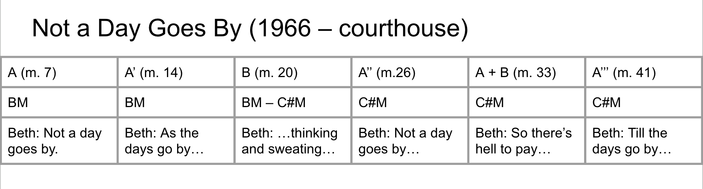
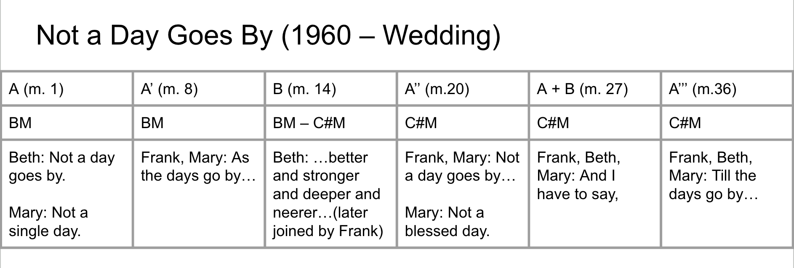

1981 Original Cast (Left to Right: Jim Walton, Ann Morrison, Lonny Price)
2013 West End Cast (Left to Right: Mark Umbers, Damian Humbley, Jenna Russell)
Adapted from 1934 play of the same name by George S. Kaufman and Moss Hart.
George Furth (Book)
- Company
Hal Prince (Producer)
- Company
- Follies
- A Little Night Music
- Pacific Overtures
- Sweeney Todd
- Merrily We Roll Along
Paul Gemignani (Conductor)
- Numerous shows since Follies
Jonathan Tunick (Orchestrator)
- Numerous shows, collaborated from 1970-2021 (Sondheim's Death)
1981 Broadway production - Hal Prince
1985 San Diego production - James LaPine
1990 Washington DC production
2000 Off-West End production - Michael Grandage
2002 Kennedy Center production
2013 West End production
2016 LA production
2023 Broadway revival
2023 Revival Cast (Left to Right: Daniel Radcliffe, Jonathan Groff, Lindsay Mendez)
Hal Prince was interested in having a show that could be played by a younger cast. Anticipating a hit.
When recalling the moment he called Sondheim to do a show “It was the first time he ever said yes on the phone.” - Sondheim on Music, 309
Sondheim’s anecdote about the genesis of the title of Not a Day Goes By.
Franklin Shepard, a successful songwriter and movie producer in his forties, reviews his life, both professional and personal, especially his best friends, Mary Flynn and Charley Kringas, and his two wives, Beth and Gussie. The show's story moves in reverse chronology, beginning in 1976 at the friends' lowest moment and ending in 1957, at their youthful best.
Sondheim’s 4th most recorded song as of 2005, with one recording coming out before the original cast album was released (Carly Simon’s Torch album).
Sung by Jim Walton (Frank) in the original production due to difficulties with Sally Klein’s (Beth) vocal technique.
Only song reprised in full, and doesn’t share much thematic/motivic material with other songs in the show.


Economical use of motive creates sense of inevitability.
Sondheim makes a change in almost every iteration of the motive, whether in harmony melody, or accompaniment. This creates surprise or freshness.
m.9 - Surprise tritone in the tenor.
m.19 - Surprise bVI sus chord.
m.21 - Surprise G#.
m.28 - Surprise melodic leap and chromatic chord.
…the frequency of triplets, particularly when they're set against an obvious duple or quadruple pulse, serve as musical illustrations of the idea of the song's title…most of the song it feels as though the melody is fighting against what is happening underneath, as though it's reluctant to let those days go by.
Quarter note triplet motif is similar to the climactic moment in We Do Not Belong Together in Sunday. This connection is significant because this is both the last time that Beth and Frank interact with each other (chronologically) as well as Dot and George in Sunday.
From Finishing the Hat – In any other musical, the reprise would be the disillusionment, here it is the promise. (The full dramatic impact of the 1960 wedding only emerges because we have already seen how the marriage ends in 1966). The point being that as people age, each encounter with the past is richer for the memory.
One of the interesting aspects of Not a Day Goes By is that the reprise brings context to the song which is not apparent in the original act one exposition. While Beth is the soloist who sings the number in act one, the act two reprise splits the vocal lines in a way which gives the audience more information about what each character is feeling.
For Frank: A journey through memory, aspects which are both hopeful and bitter.
For Mary: Bittersweet ‘breakup’ song.
For Beth: Hopeful love song.
Why does this number exist in the show? It is a way of marking Frank’s progress as a character, and its position in the chronology makes it such that we can see how Frank’s youthful dreams become poisoned as he continues to compromise for success.
Significant in that it is the only song which is narratively framed as a reflection (outside of Good Thing Going).
On top of this, it is one of the few songs which stands musically independently from other numbers in the show. - Horowitz.
Dreaming - This is the first time we are seeing the concept of dream addressed directly/in a prominent role.
Struggle of Artists - Weighing commercial value against artistic value as well as work against relationships (romantic/familial).
Patter-style writing in Franklin Shepard Inc. and other numbers similar to songs in Company/Into the Woods.
Struggle of Artists - Weighing commercial value against artistic value as well as work against relationships (romantic/familial).
32 bar AABA song as a means of setting tone given the time period, almost the way that Follies uses the revue as a vehicle for the narrative.
Mr. Sondheim has given this evening a half-dozen songs that are crushing and beautiful - that soar and linger and hurt. But the show that contains them is a shambles. - Frank Rich (New York Times) Link
The walkouts from the new Hal Prince-Steve Sondheim musical are almost epidemic. There were about 140 people who left after the intermission at a recent performance. ‘Terrible’ and ‘tacky’ are the words most often being used. - Liz Smith (New York Daily News)
Inexperienced Cast
Hard to follow story (challenge of reverse chronology), Frank is a very unlikable character through most of Act I.
High status creators (Sondheim and Hal Prince Duo) not delivering on expectations.
Many aspects were cut or changed with various productions. While Sondheim considered the show finished in 1992, major revisions continued to be made, with the 2000 version reinstating the graduation scenes at the beginning and end. This version (directed by Michael Grandage) was one of the first productions which achieved critical success. -Buchman
Blustein, Nathan Beary. "Through Arrangements of Shadows: Experiences of Reprise in Stephen Sondheim’s Leitmotivic Musicals."PhD. diss., Indiana University, 2020. 112-116.
Buchman, Andrew. 2019. “Dramaturgical Problems: Rethinking the History of Merrily We Roll Along(1981).” Studies in Musical Theatre 13 (2): 169–85.
Horowitz, Mark Eden. 2005. “Biography of a Song.” Sondheim Review 12 (2): 20–27.
Horowitz, Mark Eden, and Stephen Sondheim. “Sondheim on Music : Minor Details and Major Decisions.” Lanham, Md: Scarecrow Press in association with Library of Congress, 2003.
Orchard, Lee Frederick. "Stephen Sondheim and the Disintegration of the American Dream: A Study of the Work of Stephen Sondheim from "Company" to "Sunday in the Park with George" PhD diss., University of Oregon, 1988. 510-512, 526.
Rich, Frank. “Stage: A New Sondheim, 'Merrily We Roll Along’.” The New York Times. November 17, 1981. Link
Sondheim, Stephen. Finishing the Hat : Collected Lyrics (1954-1981) with Attendant Comments, Principles, Heresies, Grudges, Whines and Anecdotes. New York: Alfred A. Knopf, 2010.